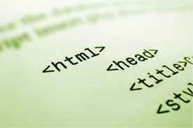

INTRODUCCION El HTML no es más que una aplicación del SGML (Standard Generalized Markup Language), un sistema para definir tipos de documentos estructurados y lenguajes de marcas para representar esos mismos documentos. El término HTML se suele referir a ambas cosas, tanto al tipo de documento como al lenguaje de marcas. A medida que nos afianzamos en el manejo de Internet cada uno de nosotros pasa por tres etapas diferentes: Al principio solamente conocemos unas pocas páginas, luego nos damos cuenta que existen buscadores lo cual lo hace más interesante y por último nos damos cuenta que en Internet no solamente se puede ver la información sino que también se puede publicar. ¿y qué otra manera más fácil y más sencilla? Si Internet tiene acceso a todos los rincones del mundo. Para que varias personas se comuniquen es necesarios que éstas hablen un mismo idioma. El lenguaje que utilizan las computadoras que están conectadas a Internet es HTML. A través de esta monografía explicaremos que es HTML, sus orígenes y el proceso de creación de una página web.
 Por otra parte, cabe destacar que el HTML permite ciertos códigos que se conocen como scripts, los cuales brindan instrucciones específicas a los navegadores que se encargan de procesar el lenguaje. Entre los scripts que pueden agregarse, los más conocidos y utilizados son JavaScript y PHP.¿Que es html? El HTML, Hyper Text Markup Language (Lenguaje de marcación de Hipertexto) es el lenguaje de marcas de texto utilizado normalmente en la www (World Wide Web). Fue creado en 1986 por el físico nuclear Tim Berners-Lee; el cual tomo dos herramientas preexistentes: El concepto de Hipertexto (Conocido también como link o ancla) el cual permite conectar dos elementos entre si y el SGML (Lenguaje Estándar de Marcación General) el cual sirve para colocar etiquetas o marcas en un texto que indique como debe verse. HTML no es propiamente un lenguaje de programación como C++, Visual Basic, etc., sino un sistema de etiquetas. HTML no presenta ningún compilador, por lo tanto algún error de sintaxis que se presente éste no lo detectará y se visualizara en la forma como éste lo entienda. El entorno para trabajar HTML es simplemente un procesador de texto, como el que ofrecen los sistemas operativos Windows (Bloc de notas), UNIX (el editor vi o ed) o el que ofrece MS Office (Word). El conjunto de etiquetas que se creen, se deben guardar con la extensión .htm o .html Estos documentos pueden ser mostrados por los visores o "browsers" de paginas Web en Internet, como Netscape Navigator, Mosaic, Opera y Microsoft Internet Explorer. También existe el HTML Dinámico (DHTML), que es una mejora de Microsoft de la versión 4.0 de HTML que le permite crear efectos especiales como, por ejemplo, texto que vuela desde la página palabra por palabra o efectos de transición al estilo de anuncio publicitario giratorio entre página y página. A continuación vamos a hablar un poco de historia:
Origenes del html El HTML, Hyper Text Markup Language (Lenguaje de marcación de Hipertexto) es el lenguaje de marcas de texto utilizado normalmente en la www (World Wide Web). Fue creado en 1986 por el físico nuclear Tim Berners-Lee; el cual tomo dos herramientas preexistentes: El concepto de Hipertexto (Conocido también como link o ancla) el cual permite conectar dos elementos entre si y el SGML (Lenguaje Estándar de Marcación General) el cual sirve para colocar etiquetas o marcas en un texto que indique como debe verse. HTML no es propiamente un lenguaje de programación como C++, Visual Basic, etc., sino un sistema de etiquetas. HTML no presenta ningún compilador, por lo tanto algún error de sintaxis que se presente éste no lo detectará y se visualizara en la forma como éste lo entienda. El entorno para trabajar HTML es simplemente un procesador de texto, como el que ofrecen los sistemas operativos Windows (Bloc de notas), UNIX (el editor vi o ed) o el que ofrece MS Office (Word). El conjunto de etiquetas que se creen, se deben guardar con la extensión .htm o .html Estos documentos pueden ser mostrados por los visores o "browsers" de paginas Web en Internet, como Netscape Navigator, Mosaic, Opera y Microsoft Internet Explorer. También existe el HTML Dinámico (DHTML), que es una mejora de Microsoft de la versión 4.0 de HTML que le permite crear efectos especiales como, por ejemplo, texto que vuela desde la página palabra por palabra o efectos de transición al estilo de anuncio publicitario giratorio entre página y página. A continuación vamos a hablar un poco de historia: